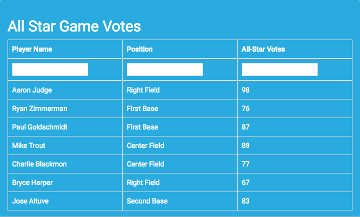
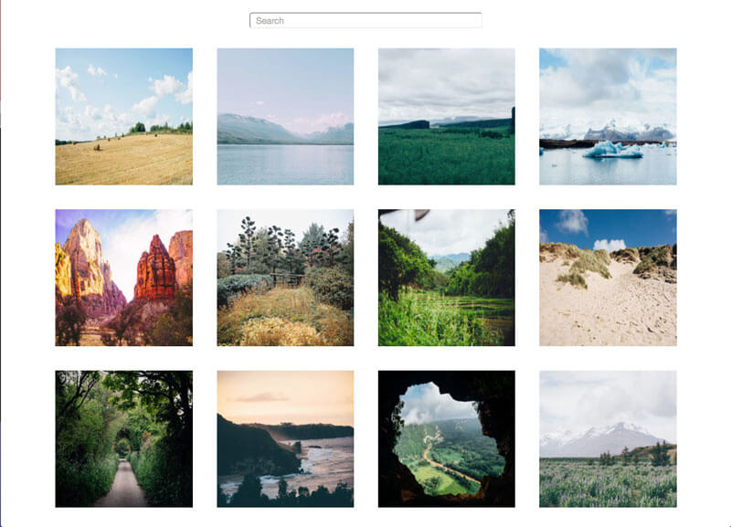
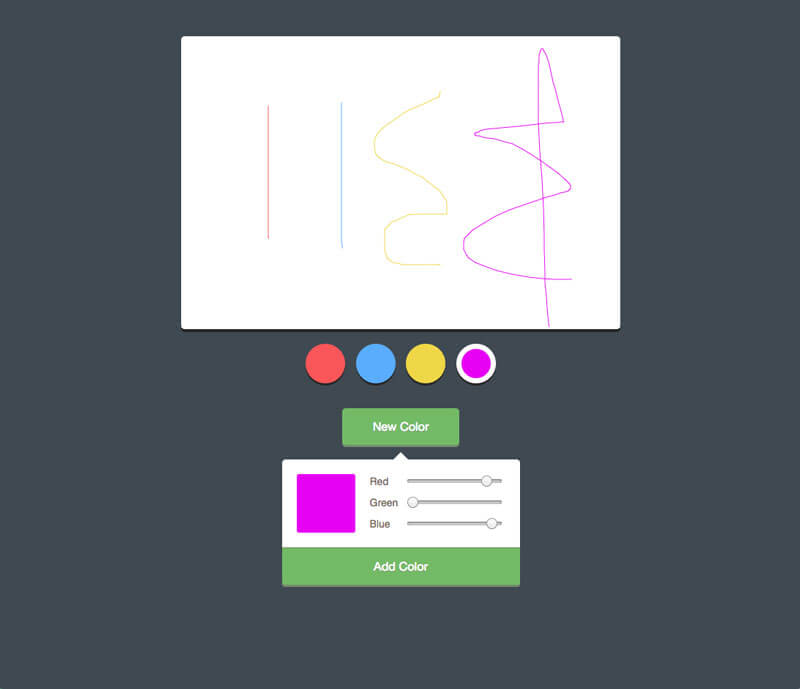
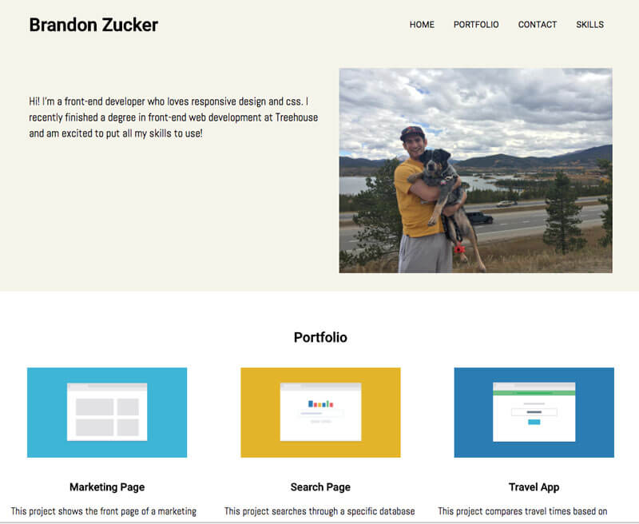
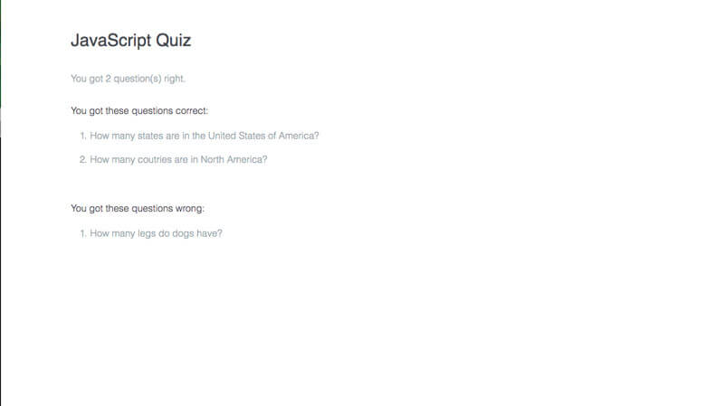
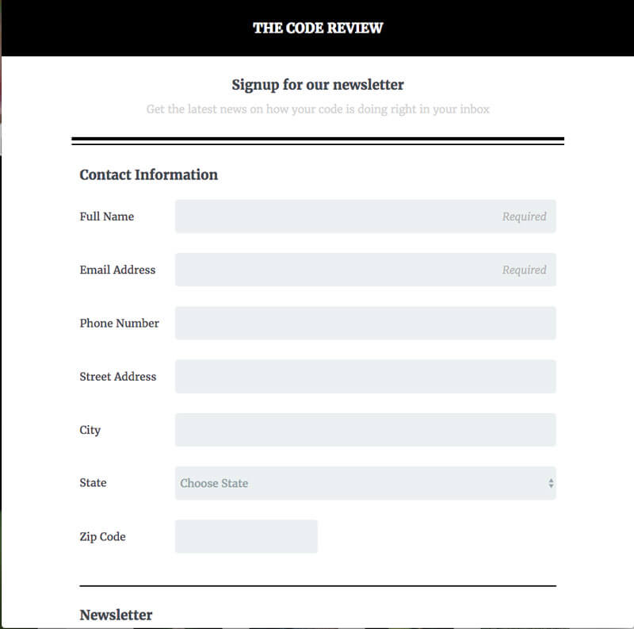
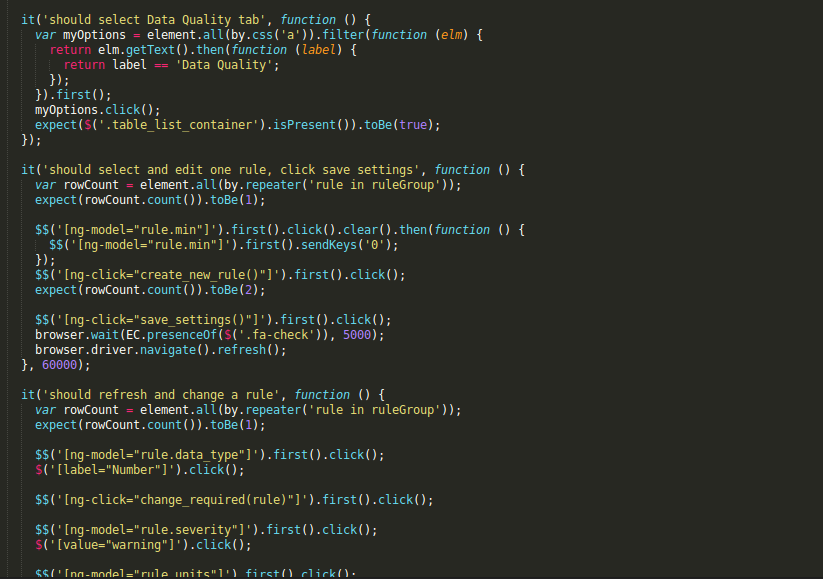

Hello! My name is Brandon! I’m an aspiring software developer who wants to learn everything about software development. I began my professional career as an accountant, and noticed even from the schooling that I lacked passion for the field. I knew it was time for a career change when I began dreading going into the office every day. I was introduced to web development and began taking online courses to learn different languages. From the start I fell in love with coding. I have always had an interest for technology and computers so I decided to put all of my effort into learning the skills needed for a new career in web development! I love the problem solving aspect of coding and getting to build things that are unique and awesome! I am fascinated that there is almost always more than one way to solve a problem. Throughout my experience with online classes and projects, I have really enjoyed learning some of the different languages and am so excited to put my skills toward creating amazing things! I understand I do not have much experience but my 3 month internship at Devetry as a software engineer has taught me amazing things about the field. I am even more driven to succeed now that I have had a taste of what it is like to be a Software Engineer. My portfolio below represents some of the things I enjoyed learning on my own and at Devetry. I believe these projects display my current skillset. Please see link below for my resume.







If you liked what you saw on my portfolio, feel free to contact me!